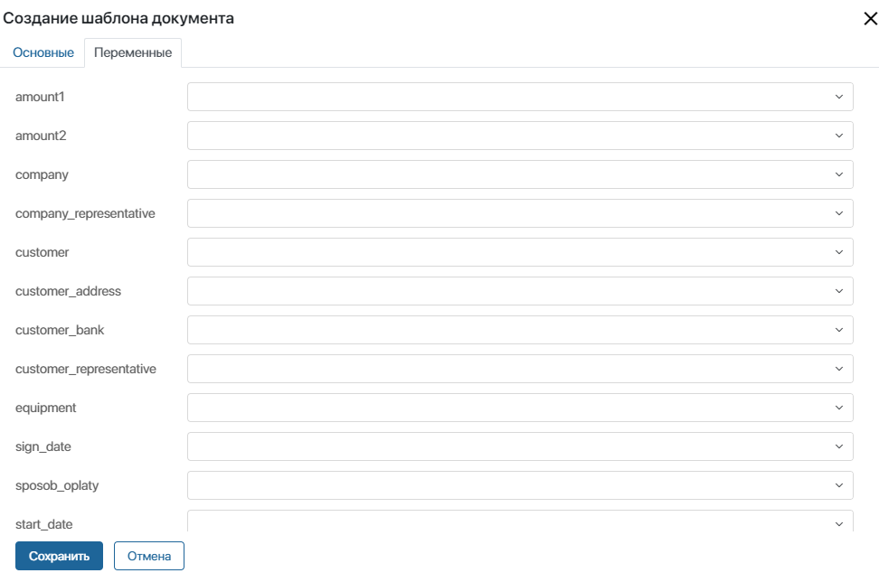
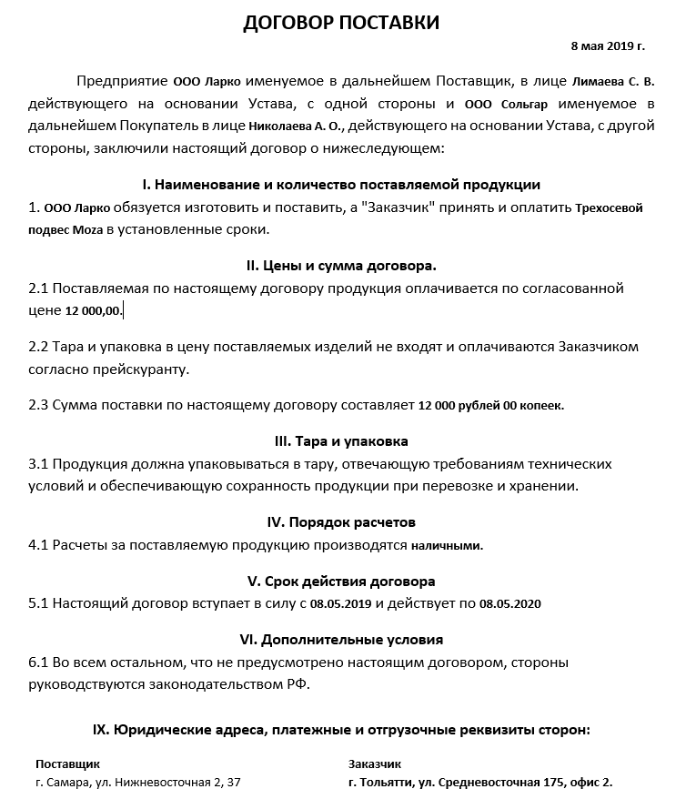
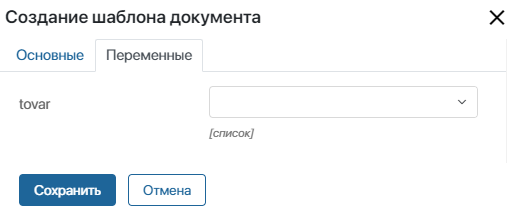
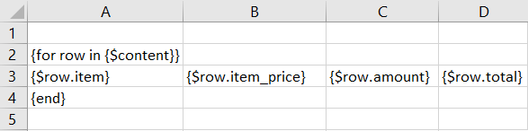
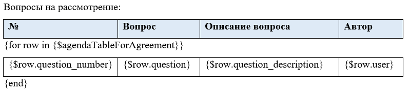
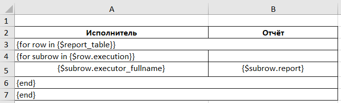
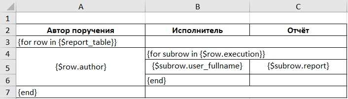
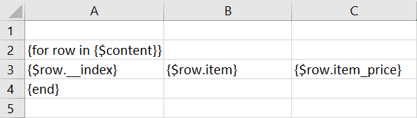

Шаблон документа, загружаемый в ELMA365, может содержать любой текст, переменные, функции, условия и циклы. Добавляя шаблон в бизнес-процесс, вы сможете связать поля из вашего шаблона с контекстными переменными процесса.
Для составления шаблона используйте:
- функции:
- для работы со строчным типом данных;
- ToString() — чтобы вывести различные типы данных в переменной;
- DateTime() — отразить дату и время в определённом формате с учётом локали;
- Count() — отобразить число элементов в таблице или приложении;
- склонения по падежам;
- другие специальные функции
Barcode,JobPosition,PasteImage,HYPERLINKиExtText. Подробнее читайте в статье «Специальные функции синтаксиса шаблонов»;
- условия — чтобы вывести текст, который удовлетворяет заданному условию;
- цикл for — отобразить данные в виде списка или таблицы.
Синтаксис переменных
Все переменные в шаблоне должны иметь следующий формат: {$имя_переменной}. Имя переменной уникально и пишется латинскими буквами, например, {$kontragent}. Такая переменная позволит подставить наименование контрагента при создании договора в бизнес‑процессе.
В шаблоне можно использовать атрибуты полей из контекста приложения, т. е. обращаться к вложенным переменным. Доступно для полей типа Файлы, Пользователи, Приложение, Произвольное приложение и т. д.
Например, в заказе есть поле Договор (код — contract), куда загружается файл договора, а также поле Клиент (код — client), в которое добавляется элемент приложения Контакты. В сгенерированном документе можно отобразить название файла или номер телефона клиента. Для этого в синтаксисе шаблона используются код поля из исходного приложения и код вложенной переменной, разделённые точкой: {$contract.__name} или {$client.phone}.
При написании функций аргументы и значения переменных заключаются в кавычки. Разрешено использовать следующие виды кавычек: " ", « », “ “, ” ”, ' '.
Функции для работы со строчным типом данных
Эти функции позволяют выводить текст в разном формате.
Для примера в переменной $stroka1 задано значение Иван Крапивин:
UpperCase(<param1: строка>)— переводит текст в верхний регистр.
начало примера
Пример
{UpperCase({$stroka1})} —> ИВАН КРАПИВИН.
конец примера
LowerCase(<param1: строка>)— переводит текст в нижний регистр.
начало примера
Пример
{LowerCase({$stroka1})} —> иван крапивин.
конец примера
Capitalize(<param1: строка>)— переводит первую букву первого слова в заглавную.
начало примера
Пример
{Capitalize({$stroka1})} —> Иван крапивин.
конец примера
Substr(<param1: строка>, <from: число>, <length: число>)— извлекает часть текста, начиная с указанного символа<from>, длиной в заданное количество символов<length>.
Вы можете заполнить только <from>, чтобы сохранить весь текст после указанного символа.
начало примера
Примеры
{Substr({$stroka1}, 0, 3)}—> Ива;{Substr({$stroka1}, 3)}—> н Крапивин.
конец примера
Функция ToString()
Функция ToString универсальна и позволяет выводить в документе следующие типы данных:
Подробнее про типы данных в ELMA365 читайте в статье «Типы данных в системе».
Число
Для этого типа данных используется следующий синтаксис: ToString(param1: число, <format: строка>, <locale: строка>).
Для примера в качестве $number1 будем использовать целое число 546.
начало примера
Пример
{ToString({$number1})} —> 546.
конец примера
По умолчанию число выводится цифрами. Чтобы вывести число прописью, используйте формат astext.
начало внимание
Обратите внимание, дробные числа вывести прописью нельзя.
конец внимание
начало примера
Пример
{ToString({$number1}, astext)} —> пятьсот сорок шесть.
конец примера
Можно указать локаль, чтобы вывести число прописью на другом языке. Доступные локали:
- русский язык —
ru–RUилиru; - английский язык —
en–USилиen.
начало примера
Пример
{ToString({$number1}, astext, en–US)} —> five hundred forty six.
конец примера
Строка
Строка позволяет отобразить в документе текстовую информацию.
Для этого типа данных используется следующий синтаксис: ToString(param1: строка).
Для примера используем переменную $line1 с значением Отправлено на согласование.
начало примера
{ToString({$line1})} —> отправлено на согласование.
конец примера
Категория
Тип данных Категория используется для того, чтобы выбирать определённое значение из списка. Например, при выборе способа оплаты можно указать, производится оплата картой или наличными.
Для этого типа данных используется следующий синтаксис: ToString(param1: категория).
При создании контекстной переменной этого типа в процессе указывается её название и код. Укажите соответствующий код в функции ToString, чтобы в документе, формируемом по шаблону, отобразилось название переменной.
Для примера в качестве переменной $category1 возьмём оплату картой: { «code»: «karta», «name»: «картой» }.
начало примера
Пример
Оплата производится {ToString({$category1})} —> Оплата производится картой.
конец примера
Также для типа данных Категория в шаблон можно вывести название и код категории без использования функции ToString.
Начало примера
Примеры
- Оплата производится
{$category1.name}—> Оплата производится картой; - Оплата производится
{$category1}—> Оплата производится картой; - Код используемой категории:
{$category1.code}—> Код используемой категории: karta.
Конец примера
Выбор «да/нет»
У этого типа данных два варианта: Да и Нет. Вы можете их переименовать, например, Согласовано и Не согласовано.
Для примера возьмём $option1 = true. Вариант Да (yesValue) определён как Согласовано.
начало примера
Пример
{ToString({$option1})} —> Согласовано.
конец примера
Деньги
Вы можете вывести в документе денежную сумму в различном формате.
Для этого типа данных используется следующий синтаксис: ToString(param1: деньги, <format: string>, <locale: string>).
|
В функции можно указать локаль. Доступные локали:
- русский язык —
ru–RUилиru; - английский язык —
en–USилиen.
начало примера
Пример
{ToString({$money1}, full, en)} —> 1 005 rubles 56 kopecks.
конец примера
ФИО
Вы можете указать в документе фамилию, имя и отчество в нужном формате и падеже.
Для этого типа данных используется следующий синтаксис: ToString(param1: ФИО, <format: строка>, <case: строка>).
|
|
Обратите внимание, функция максимально правильно склоняет имя в том случае, если указано отчество.
начало примера
Примеры
{ToString({$fio1})}—> Сергеев Сергей Николаевич;{ToString({$fio1}, short)}—> Сергеев С.Н.;{ToString({$fio1}, short, Р)}—> Сергеева С.Н.
конец примера
Если вы хотите отдельно указать имя, фамилию или отчество, используйте значения, записанные в переменной типа Ф.И.О.: {$executor.fullname.firstname}, {$executor.fullname.lastname}, {$executor.fullname.middlename}.
Телефон
Вы можете создать маску для ввода телефонного номера. Для этого используется следующий синтаксис: ToString({$phone1}, «+7–XXX–XXX–XX–XX EEE»).
Латинские буквы в синтаксисе обозначают:
- X — основной номер;
- E — добавочный номер.
Если пользователи запишут номер телефона из меньшего количества цифр, чем обозначено в маске для ввода, в готовом документе лишние буквы Х и Е не отобразятся.
Телефонный номер заполняется цифрами слева направо.
начало примера
Примеры
{ToString({$phone1}, «+7—XXX—XXX—XX—XX»)}—> +7–912–345–67–89;{ToString({$phone1}, «X—XXX—XXX—XX—XX EEE»)}—> 8–912–345–67–89 159;{ToString({$phone1}, «XX—XX—XX E»)}—> 45–67–89 3.
конец примера
Дата/время
Вы можете указать в шаблоне дату и время, например, дату поставки оборудования по договору. Для этого используется следующий синтаксис: ToString(param1: дата/время, <format: строка>, <locale: строка>).
У типа данных Дата/Время есть разные подтипы: Дата/Время, Дата, Время.
Без указания дополнительных аргументов в документе отображается текущая дата и время.
начало примера
Пример
{ToString({$date1})} —> Дата/время — 09.04.2025 15:18:43; Дата — 09.04.2025; Время — 15:18:43.
конец примера
При использовании в функции формата short время указывается без уточнения секунд.
начало примера
Пример
{ToString({$date1}, short)} —> Дата/время — 09.04.2025 15:18; Дата — 09.04.2025; Время — 15:18.
конец примера
Если в функции задан формат long, время будет отображаться с секундами, а дата — с полным названием месяца:
начало примера
Пример
{ToString({$date1}, long)} —> Дата/время — 09.04.2025 19:18:43; Дата — 9 апреля 2025 г.; Время — 19:18:43.
конец примера
Вы также можете указать локаль:
- русский язык —
ru–RUилиru; - английский язык —
en–USилиen.
начало примера
Пример
{ToString({$date1}, short, en–US)} —> 4/11/19 7:15 am.
конец примера
Обратите внимание, подтип Дата/Время учитывает временную зону компании и выводит дату с учётом этой зоны. Подтипы Дата и Время выводят абсолютные значения.
Пример использования функций для настройки шаблона договора
Затем мы добавили его в бизнес-процесс и связали переменные из шаблона с переменными процесса.  После того как пользователи заполняют эти переменные, а процесс доходит до шага Генерация по шаблону, в системе автоматически создаётся готовый договор.  Файл с шаблоном, который использован в этом примере, вы можете скачать на свой компьютер. |
Функция DateTime()
Функция DateTime() позволяет вывести в шаблоне дату и время с указанием формата даты и локали.
Синтаксис функции: DateTime(<формат:строка>,<переменная:дата/время>,<локаль>).
Например, вы можете указать дату и время создания элемента.
Начало примера
Пример
{DateTime(«YYYY–MM–DD hh:mm:ss»,{$__createdAt},"ru_RU")} —> 2025–01–21 08:30:56.
Конец примера
В шаблоне поддерживаются следующие виды кавычек: " ", « », “ “, ” ”, ' '.
начало примера
Примеры
{DateTime('"DD" MMMM YYYY',{$__createdAt},"ru_RU")}—> "31" августа 2024;{DateTime("«DD» MMMM YYYY",{$__createdAt},"ru_RU")}—> «31» августа 2024;{DateTime(«'DD' MMMM YYYY»,{$__createdAt},"ru_RU")}—> '31' августа 2024.
конец примера
|
Функция Now
Чтобы подставить в шаблон текущую дату и время с учётом временной зоны, используйте функцию Now.
Синтаксис функции: Now(<format: строка>, <locale: строка>, <timezone: строка>):
- с различными значениями
formatдата будет выводиться по‑разному;
|
- для
localeдоступен русский язык —ru–RUи английский язык —en–US;
timezoneзадаётся в формате Europe/Samara, America/Toronto.
начало примера
Примеры синтаксиса функции
{Now(datelong, en-US)}— длинная дата, en-US;{Now(datelong, en)}— длинная дата en;{Now(date, en)}— только дата en;{Now(datelong, ru-RU)}— длинная дата ru-RU;{Now(datelong, ru)}— длинная дата ru;{Now(date, ru)}— только дата ru;{Now(time, ru)}— только время ru;{Now(timelong, ru)}— время с секундами ru;{Now(short, ru)}— дата и время без секунд ru.
конец примера
Функция Count()
Позволяет получить число элементов, переданных в переменной типа Таблица или Приложение. Это может быть количество строк в таблице или записей в связанном приложении.
С помощью функции можно:
- отображать общее число элементов, чтобы оценить объём данных;
- проверять наличие данных в переменной;
- выводить только количество записей вместо таблицы;
- указывать число записей перед таблицей или списком данных и т. д.
Синтаксис функции: {Count({$переменная})}.
Начало примера
Пример
{Count({$report_table})} — число строк в таблице отчёта.
{Count({$app})} — число элементов в связанном приложении.
Конец примера
Вы также можете применять функцию с циклом for.
Начало примера
Пример
- Вывести количество строк таблицы, которая вложена в основную таблицу отчёта:
{for row in {$report_table}}
Subrow count: {Count({$row.execution})}
{end}
- Показать число строк в таблице, которая является свойством связанного приложения:
{for row in {$app}}
Subrow count: {Count({$row.multi})}
{end}
где:
app— поле, которое ссылается на связанное приложение;row.multi— поле типа Таблица в этом приложении.
Конец примера
Функции для склонения по падежам
В системе доступны функции для склонения слов и словосочетаний.
FormatFio (ФорматФио)
Склоняет ФИО в нужном падеже и выводит в нужном формате, например, только имя и отчество.
Синтаксис функции: {FormatFio(<ФИО: строка>, <падеж: 1>, <фамилия: 2>)}:
- [1] — падеж обозначается первой буквой или полным названием («и» или «именительный», «р» или «родительный» и т. д.);
- [2] — формат отображения ФИО. Допустимые форматы указываются в кавычках, чередуются через пробел, в полной или сокращённой форме:
- «фамилия» или «ф.»;
- «имя» или «и.»;
- «отчество» или «о.».
начало примера
Пример
Данные {FormatFio(«Иванов Иван Иванович»,р,«фамилия и.о.»)} —> Данные Иванова И.И.
конец примера
Incline (Просклонять)
Данная функция возвращает заданную строку в указанном падеже.
Синтаксис функции: {Incline(Просклонять)(<Выражение: строка>,<падеж: 1>,<признаки: 2>)}:
- [1] — падеж обозначается первой буквой или полным названием («и» или «именительный», «р» или «родительный» и т. д.). По умолчанию будет использоваться именительный;
- [2] — дополнительные признаки комбинируются через пробел:
- фио (ф);
- мужской род (м);
- женский род (ж);
- нарицательное (н);
- одушевлённое (о);
- неодушевлённое (но)
начало примера
Пример
{Просклонять('договор подряда',П,м но)} —> о договоре подряда.
конец примера
InclineMany (ПросклонятьМнож)
Эта функция возвращает заданную строку в указанном падеже и во множественном числе. Параметры такие же, как у функции Incline.
начало примера
Пример
{ПросклонятьМнож('договор подряда',П)} —> о договорах подряда.
конец примера
NumberToString (ЧислоВСтроку)
Данная функция возвращает указанное число в текстовом формате и в заданном падеже.
Правила написания функции:
- параметры Падеж, Единица измерения и Формат отображения числа прописываются в кавычках — «»;
- параметры отделяются друг от друга запятой;
- единица измерения дробной части указывается с помощью вертикальной черты — |.
Синтаксис функции: {NumberToString(<Число>,<падеж: 1>,<единица измерения: 2>,<объём единицы измерения: 3>,<формат: 4>)}:
- <Число> — число для преобразования в строку;
- [1] — падеж прописывается с использованием кавычек, например, «И» или «Именительный», «Р» или «Родительный» и т. д. По умолчанию употребляется именительный падеж;
начало примера
Примеры
{NumberToString(5634,«П»)}—> пяти тысячах шестистах тридцати четырёх;{NumberToString(5634.37,«Р»)}—> пяти тысяч шестисот тридцати четырёх целых тридцати семи сотых.
конец примера
- [2] — единицы измерения прописываются с использованием кавычек.
|
начало примера
Примеры
{NumberToString(5850,«П»,«рубль»)}—> пяти тысячах восьмистах пятидесяти рублях;{NumberToString(5830.35,«Т»,«евро|евроцент»)}—> пятью тысячами восемьюстами тридцатью евро тридцатью пятью евроцентами.
конец примера
- [3] — объём единиц измерения. Прописывается как число, по умолчанию используется 100;
- [4] — формат отображения числа. Прописывается с использованием кавычек. Может быть использован без указания параметра [3].
Символ Ф заменяется на обозначение формата. Доступные форматы можно посмотреть в документации. |
начало примера
Примеры
{NumberToString(46.25,«И»,«ящик|мешок»,38,«{ЦЧ}({ПЦЧ}{НЦЧ}) примерно {ДЧ}({ПДЧ}{НДЧ}) и один контейнер»)}—> 46 (сорок шесть ящиков) примерно 10 (десять мешков) и один контейнер.
Примечание: .25 — это четверть. Мы указали, что в целом — 38 частей. 38\4 = 9.5 (округляется до 10);
{NumberToString(12345.5,«Д»,«бочка|литр»,60,«{ЦЧ:N} ({ПЦЧ} {НЦЧ}) и {ДЧ} ({ПДЧ} {НДЧ})»)}—> 12,345.000 (двенадцати тысячам трёмстам сорока пяти бочкам) и 30 (тридцати литрам).
Примечание: В значении {ЦЧ:N} :N — это формат отображения. Данный формат обозначает, что всегда необходимо показывать дробную часть в числе, но, так как в функции дробная часть отделяется, после запятой будут идти нули.
конец примера
ChangeKind (ИзменитьРод)
Данная функция позволяет изменить род прилагательного.
Синтаксис функции: {ChangeKind(<прилагательное в именительном падеже мужского рода: строка>,<род: 1>)}.
[1] — род и число, в которые нужно преобразовать.
В скобках даны сокращённые варианты. |
начало примера
Примеры
{ChangeKind(спокойный,жен)}—> спокойная;{ChangeKind(спокойный,мн)}—> спокойные.
конец примера
GetPartOfFullName (Фио)
Функция позволяет получить полное имя или его часть. Синтаксис функции: {Фио(<ФИО:строка>,<часть ФИО:1>)}.
[1] — часть ФИО.
В скобках даны сокращённые варианты. |
начало примера
Пример
{Фио('Пушкин Александр Сергеевич',о)} —> Сергеевич.
конец примера
AnotherGenderSecondName (ФамилияПротивоположногоПола)
Функция позволяет получить фамилию противоположного пола.
Синтаксис функции: {ФамилияПротивоположногоПола(<фамилия:строка>)}.
начало примера
Пример
{ФамилияПротивоположногоПола(Петров)} —> Петрова.
конец примера
Условия
В зависимости от условия, записанного в шаблоне, в документе можно вывести тот или иной текст.
Условие начинается с оператора {if <условие>} и заканчивается оператором {end}. Здесь <условие> — это любое условие, например, {$имя_переменной} = «Да».
начало примера
Пример 1
{if {$user_name} = «Петров Илья»} С уважением, Петров Илья {end} —> в функции задаётся условие для проверки имени пользователя. Если значение в поле совпадёт, отобразится указанный текст.
Пример 2
{if {$week.day} = «Пятница»}
До свидания, хороших выходных!
{else}
До свидания!
{end} —> в примере проверяется текущий день недели. В зависимости от его значения отобразится один из вариантов указанного текста.
конец примера
начало внимание
При использовании многострочных условий для файлов формата .xlsx нельзя располагать дополнительный текст в строках с операторами {if <условие>}, {else} и {end}. При генерации документа он удаляется.
конец внимание
Обратите внимание, для переменных типа Выбор «да/нет» нужно указывать значения из поля Варианты. По умолчанию это Да и Нет.
Начало примера
Пример
{if {$options} <> «Нет»} Текст для примера {end} —> текст будет отображаться только в том случае, если выбрано значение Да.
Конец примера
В функции можно проверять наличие значений у свойств элемента приложения. Если поле на форме заполнено, можно вывести его значение.
Для свойства типа Приложение или Файлы функция условия применяется, если в нём содержится только одно значение, т. е. для свойства включена опция Один. Когда отмечена опция Несколько, используется Цикл for.
Начало примера
Пример
{if {$document}} {$document} {end} —> если в поле типа Файлы загружен документ, в сгенерированном файле отобразится его название.
конец примера
При написании условий вы можете использовать следующие операторы:
- = — равно;
- <> — не равно;
- > — больше;
- >= — больше или равно;
- < — меньше;
- <= — меньше или равно.
Логические операторы OR и AND
Для создания сложных условий можно использовать операторы OR и AND, которые позволяют задавать несколько условий в виде одной конструкции.
При использовании OR достаточно, чтобы выполнилось хотя бы одно из указанных условий.
начало примера
Пример
{if {$trip.location_type} = «Гостиница» OR {$trip.location_type} = «Квартира принимающей стороны»}
{$business_trip_request.city}
{end} — адрес будет указан в зависимости от типа размещения.
конец примера
При использовании AND нужно, чтобы выполнялись все перечисленные условия.
начало примера
Пример
{if {$item.price} < 5000 AND {$item.isAvailable}}
{$item.name}
{end} — название элемента будет указано, если выполняются оба условия.
конец примера
Условия с логическими операторами OR и AND можно комбинировать, используя скобки.
начало примера
Пример
{if ({$business_trip_request.location_type} = «Гостиница» OR {$business_trip_request.location_type} = «Квартира принимающей стороны») AND ({$business_trip_request.price} < 5000)}
{$business_trip_request.city}
{end} — адрес будет указан, если удовлетворены все условия.
конец примера
Цикл for
Цикл for используется для того, чтобы отобразить в документе список, например, несколько товаров один за другим.
Цикл начинается с оператора {for <выражение>} и заканчивается оператором {end}. Здесь <выражение> — поле для переменной, которое при загрузке шаблона в систему и извлечении цикла for из документа будет определено как список.
начало примера
Пример
{for position in {$tovar} }
заказан товар — {$position}
{end}
конец примера
При загрузке шаблона в систему и извлечении цикла for из документа, поле для переменной будет определено как список.

for для приложений
Цикл for можно использовать, чтобы отображать данные из приложения. Названия полей можно указывать с префиксом data или без него, например {$data.appListField} или {$appListField}.
начало примера
Пример
{for app in {$appListField}}
Приложение — {$app}, с именем {$app.__name} на сумму {$app.money}
{end}
конец примера
Такой же цикл позволяет записать данные приложения в таблицу.
начало внимание
Для файлов формата .xlsx в строках с операторами {for <выражение>} и {end} нельзя располагать дополнительный текст. При генерации документа он удаляется. Исключение составляет текст в объединённых ячейках.
конец внимание
начало примера
Пример
{for app in {$appListField} }
|
|
|
{end}
конец примера
for для таблиц
Вы можете отобразиться данные в поле не только в виде списка, но и в виде таблицы. Для корректной работы цикла при загрузке шаблона в систему укажите тип данных Таблица для переменной в цикле.
Если вам нужно выгрузить в документ данные из таблицы ELMA365, например, список товаров с указанием их количества и стоимости, заполненный в процессе обработки заказа, вы можете использовать шаблон в формате .xlsx.
Настраивая шаблон, используйте цикл for и укажите переменную процесса, в которой хранятся данные таблицы.
При создании шаблона в файле формата .xlsx команды for и end должны быть в первом столбце таблицы, иначе введённый текст отобразится некорректно. Далее вам нужно указать в шаблоне коды соответствующих полей приложения.
В функции item_price — это код поля Стоимость. В шаблоне укажите его с префиксом row.data или row, например {$row.data.item_price} или {$row.item_price}. Префикс позволяет обратиться к элементу в цикле и заполнить в документе столько строк, сколько заполнено в таблице ELMA365.
начало внимание
В строках таблицы с операторами {for <выражение>} и {end} нельзя располагать дополнительный текст. При генерации документа он удаляется. Исключение составляет текст в объединённых ячейках.
конец внимание
Шаблон документа формата .xlsx для таблицы, в которой указан товар, его стоимость, количество и итоговая сумма к оплате, может выглядеть следующим образом:

Вы также можете добавить условие if в цикл for. Пример описан в статье «Настройки шаблонов для листов согласования и ознакомления».
Обратите внимание, для файлов формата .xlsx в строках с операторами {for <выражение>} и {end} нельзя располагать другой текст, так как он удаляется при генерации. Исключение составляют объединённые по вертикали ячейки.
Шаблон для таблицы в файле формата .docx
Чтобы генерировать таблицу по шаблону в файле формата .docx:
- Отделите первую строку таблицы с помощью опции Разделить таблицу.
- В появившейся пустой строке объявите цикл
for. - Настройте шаблон в таблице, указав переменные из контекста бизнес-процесса.
- Под таблицей закройте цикл командой
end.
Например, шаблон для таблицы в документе может выглядеть следующим образом:

Вложенные таблицы
Цикл for можно использовать, чтобы создать вложенную таблицу. Для обращения к колонкам вложенной таблицы вместо row.data или row используется другой префикс — subrow.data или subrow.

Обратите внимание, в строках с операторами {for <выражение>} и {end} нельзя располагать другой текст, так как он удаляется при генерации. Исключение составляют объединённые по вертикали ячейки. Например, при генерации по такому шаблону значение переменной {$row.author} отобразится в таблице:

Вывести порядковый номер в таблице
С помощью цикла for можно выводить в шаблоне таблицы порядковый номер строки. Для этого используется префикс row.data или row и системное свойство __index, например {$row.__index}.
Шаблон для таблицы с номером строки, названием товара и его стоимостью можно создать следующим образом:
